第22章
纳税等级的学问
有时候，只要一句话就能揭露一个常识性错误。“像企鹅一样翱翔。”——不，它们不会飞。“历史上著名的比利时人。”——对不起，比利时最著名的就是华夫饼。1“太饱了，不能吃甜点。” ——来吧，没有什么合理的理由拒绝纸杯蛋糕。然而，我最喜欢的一句谬误可能你已经听过无数次了：
“跃入上一个纳税等级。”
这句话概括了一种真实、广泛、完全错误的恐惧：如果我只差一点儿就能进入更高的纳税等级，那么加薪是不是会使到手的钱更少了呢？
在这一章中，我将解释个人所得税背后的基本数学原理，介绍个人所得税在美国公民生活中所扮演的角色简史，并确定哪些迪士尼人物是它最热心的拥护者。但首先，我想向你们保证，税收等级不会在一夜之间突然提高。可怕的“税收等级的跳跃性”就像比利时名人一样，纯属虚构。
我们的故事始于1861年。2随着美国内战的临近，联邦政府开始酝酿快速致富的计划，但这些计划都前景堪忧。长期以来对外国商品征收的关税不再能提供充足的资金，对消费者的购买征税可能会对美国穷人造成更大的打击，进而失去选民。针对富人的财富（包括房产、投资和储蓄）征税将违反宪法禁止“直接”征税的规定。资金短缺的国会该怎么办呢？
他们别无选择。那年8月，联邦政府紧急推出一项临时收入税，对于任何超过800美元的收入，都要征税3%。3
这种纳税方式的依据是什么呢？就是货币的边际效用递减。你拥有的美元越多，再增加1美元对你的意义就越小。因此，同样是被收取1美元的税金，有1 000美元的人比只有1美元的人痛苦要小。由此产生的体系被称为“累进税”，其中较高的收入人群面临较高的边际税率。（提示：“累退税”在低收入人群中征收的比例更高，“单一税”对每个人征收的税率是一样的。）
你可以想象早年的美国人，一边刮着他们疯长的胡子，一边担心小小的加薪是否会让他们从免税的行列“跃入”纳税人的行列。毕竟，799.99美元的收入不需要缴税，但800.01美元的收入就需要缴税了。那么问题来了，0.02美元的加薪幅度真的会让你多缴24美元的税吗？
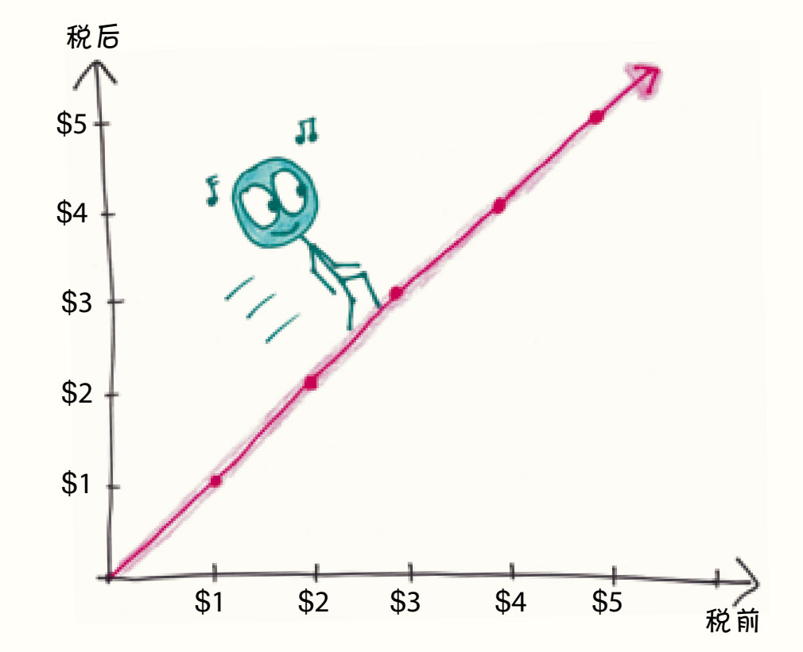
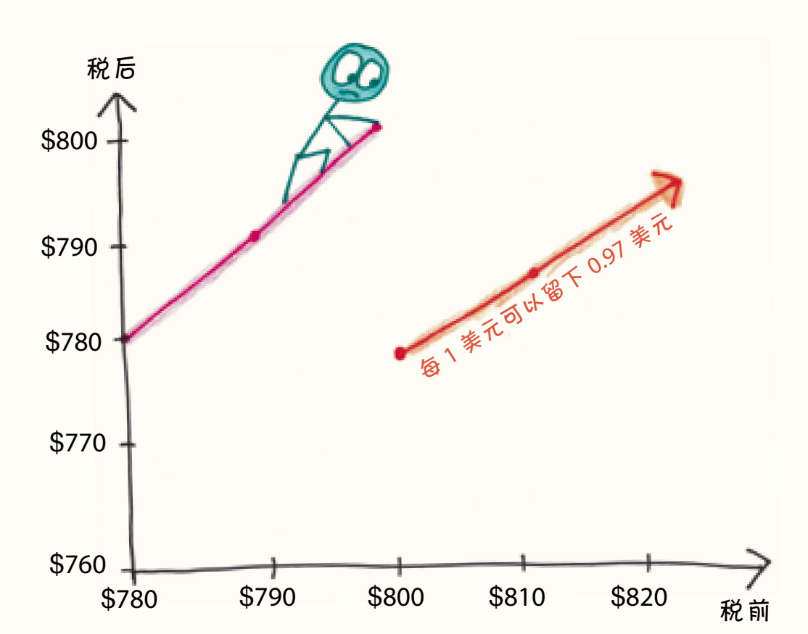
值得庆幸的是，不是这样的。就像现代的个人所得税一样，这种税收并不适用于所有的收入——只适用于边际收入，也就是收入的最后一部分。无论你是贫穷的阿巴拉契亚山区农民还是科尼利厄斯·范德比尔特（铁路时代的比尔·盖茨），你的第一笔800美元收入都是免税的。
如果你赚了801美元，那么你只需要支付最后一美元的3%，应纳税额只有0.03美元。
如果你赚了900美元，那么你将支付最后100美元的3%，应纳税额只有3美元。
以此类推。
为了使这个道理更加形象，我们想象政府把你的钱分成了几桶，第一桶可以装800美元，标着“生活费”。你先把这桶填满，不用缴税。
第二个桶里是“享受费”。一旦第一个桶的容量达到极限，剩下的钱就会流向这里，政府会取走这一桶中的3%。
1865年，政府提高了利率，带来了第三个桶：
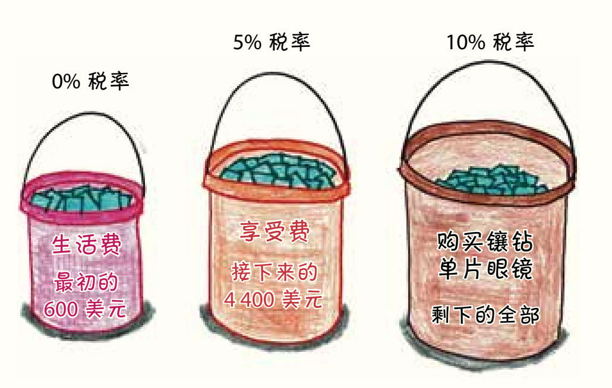
一段时间后，战争结束了。所得税的征收随之中止了几十年，直到19世纪末才重新回到人们的视线中。1893年，金融危机席卷美国，造成了重创；1894年，所得税的复出力挽狂澜。然而，一年后，最高法院裁定：关于“直接”收税的禁令也适用于所得税。也就是说，所得税的征收是违宪的，这太令人尴尬了。
直到20年后，美国才通过宪法修正案恢复了这项税收。但即使在那个时候，它也不是大张旗鼓地回来，而是踮着脚尖偷偷溜回来的。1913年是长期征收所得税的第一年，只有2%的家庭需要缴纳。4边际税率是低得可怜的7%，而且只适用于超过50万美元（考虑到通货膨胀，相当于今天的1 100万美元）的部分收入。
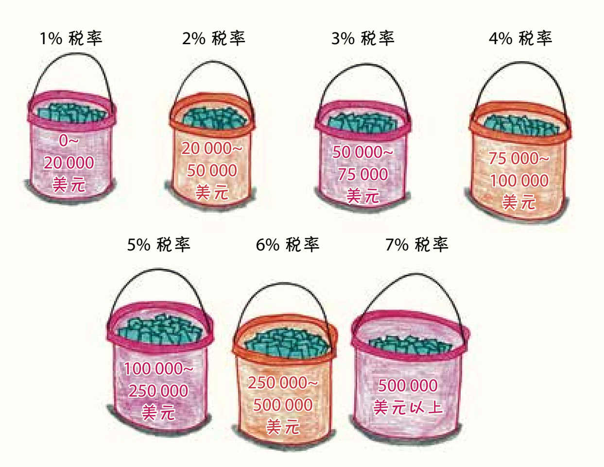
那时候，7个税收等级对应的就是从1%上升到7%的税率，都是漂亮的整数，呈现整齐的线性增长。
但为什么就是选这7个数呢？说实话，没有原因。
“每个人的判断都有所不同，”伍德罗·威尔逊总统写道，“对超出正常水平的收入进行征税，这是公平的。”5但没有一个严密的数学公式可以规定什么才是“正确”的税率。税率的设定是主观的，充满了猜测、政治角力和价值判断。
当然，比税法武断的法律条文多了去了。在美国，你在21岁生日的前一天还不能买酒，但第二天就可以了。从理论上来讲，这项法律完全可以采取逐渐放宽的形式——允许你在19岁时买啤酒，20岁时买葡萄酒，21岁时买烈性酒——但社会选择了一条清晰简单的界线，而不是一系列复杂又难以执行的梯度规则。
1913年收入税的制定者却正相反。更有趣的是，他们用这么小的增量把税率分成了7个等级。尽管今天我们的税率也有7个等级，但最高税率和最低税率之差为27%，而当时的这个数字只有6%。政府似乎不相信该体系的边际性质，因此试图避免利率之间的大幅“跳跃”。也许他们是这样想的：
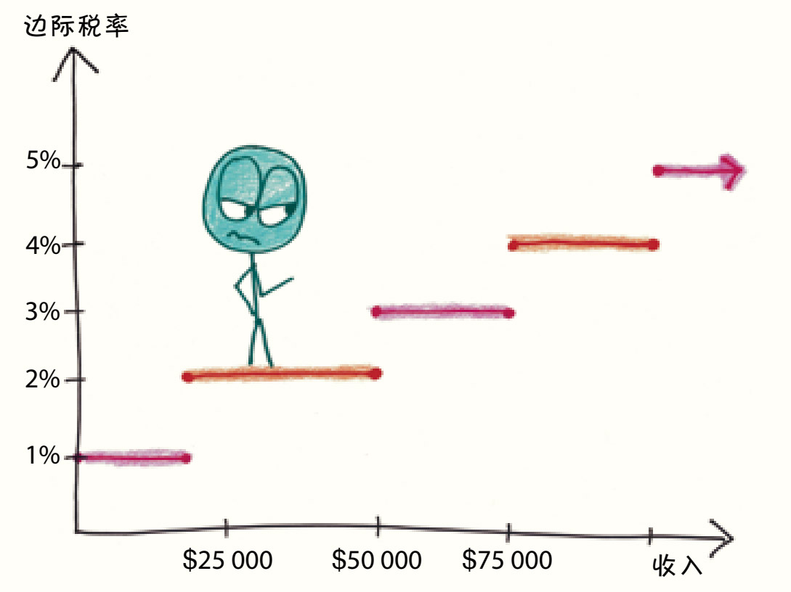
如果我们只关注税率本身，每个等级间的转换就看起来很突兀。因此，议员们努力让这个系统变化得更平稳，让它看起来是循序渐进的。
在我看来，这种做法就是浪费精力。精明的纳税人并不关心税收计划中税率抽象的渐进性，他们只关心钱——包括自己的收入和需要付多少税款，我们在制订计划时，只要保证缴纳税款的金额的增长没有突变，保证不要出现多挣1美元，税款就大大增加的情况即可。如下图所示：
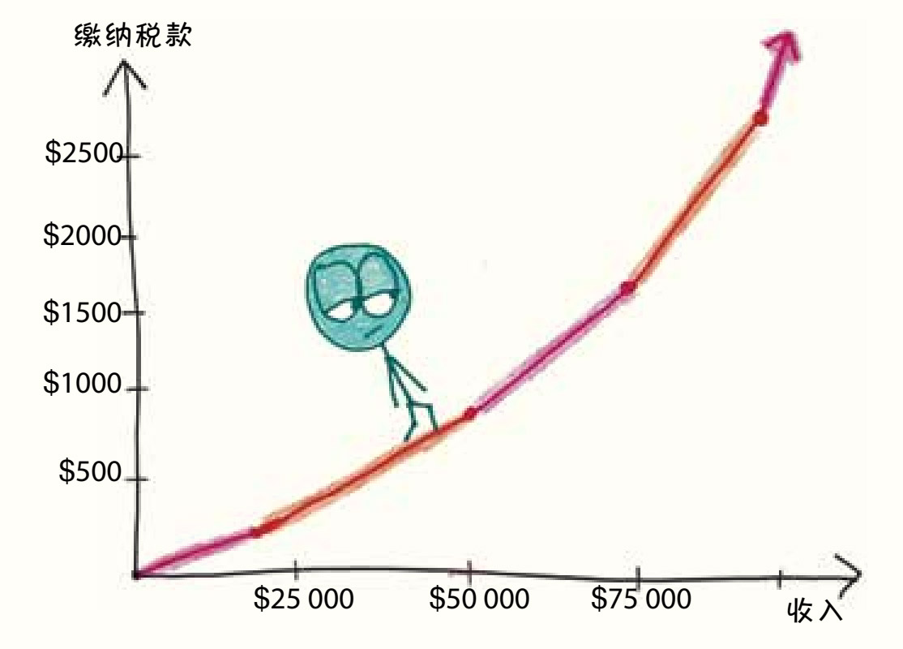
第一个图（边际税率-收入图）中有明显的跳跃性，而第二个图（缴纳税款-收入图）显示的则是一条连续的线。它通过变化的斜率反映了税率的变化：低税率的部分，曲线斜率小，坡度平缓；高税率的部分，曲线斜率大，看上去陡峭。这更好地表现了实际上税收等级转换的方式——不是突然的、跳跃式的改变（也就是数学上的“不连续”），而是从一个斜率变成另一个斜率（也就是数学上的“不可微点”）。
显然，没有人告诉国会这个道理，因为他们在1918年的税收计划6中把对跳跃式改变的警惕发挥到了荒谬的地步：
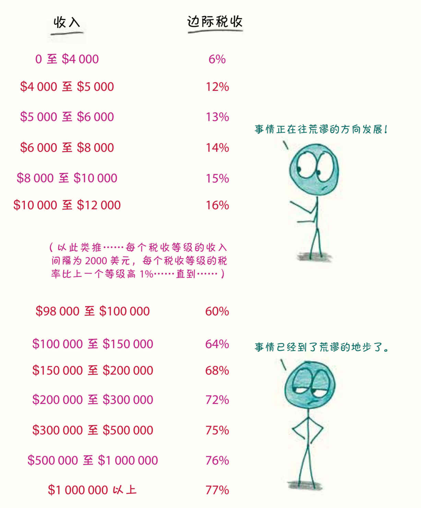
看看这一团糟的数据，你首先会注意到的是，利率已经大幅上升了。在短短五年内，美国最富有人群的边际税率增长了11倍。我想这就是当一个国家卷入叫作“一场结束所有战争的战争”（第一次世界大战）的时候必然会发生的事（尽管这种变化比战争持续的时间更长，从那以后，最高税率再也没有跌破过24%）。
更让我震惊的是当时所分的税收等级数，有56个，比美国本土州的个数（48个）还要多。
这让我想起了我在加州教微积分预科课程时最喜欢布置的一个作业。每年，我都会要求11年级的学生设计他们自己的所得税系统。一个叫 J. J.的勤奋学生7决定运用这个“逐步过渡”的想法，于是，他设计了一个边际税率不断变化、没有任何跳跃的系统。
假设边际利率从0开始，最终达到50%（针对收入超过100万美元的部分）。我们可以用两个税收等级来实现：
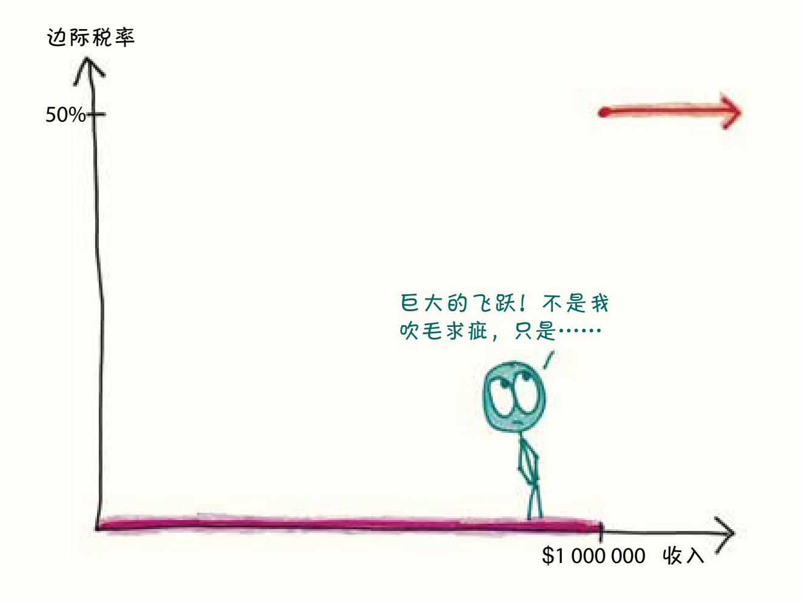
或者你可以用“一战”时期的方法，把它分成50个税收等级：
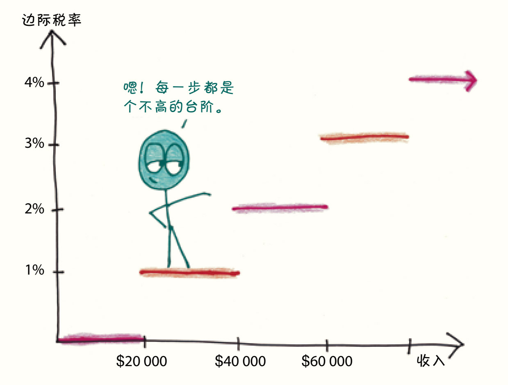
我们还可以继续，把它分成1 000个税收等级。
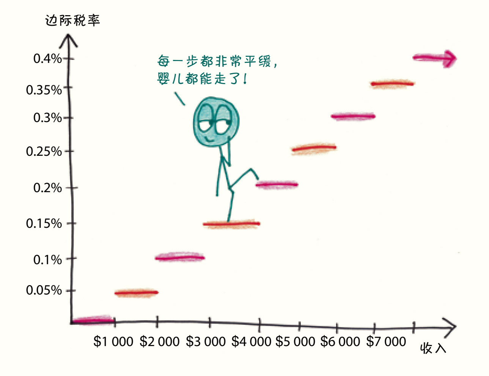
或者再继续，分成100万个税收等级。
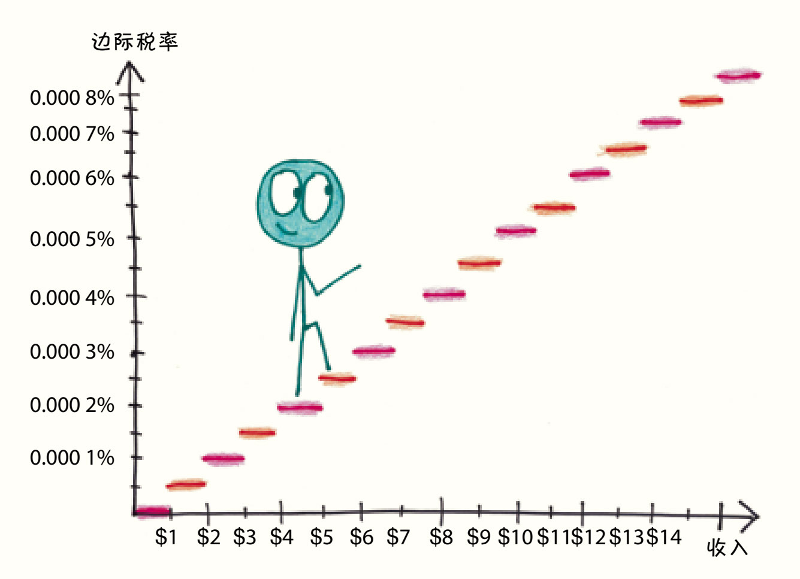
就这样细分下去，在最极端的情况下，你可以用一条直线连接两边的端点。
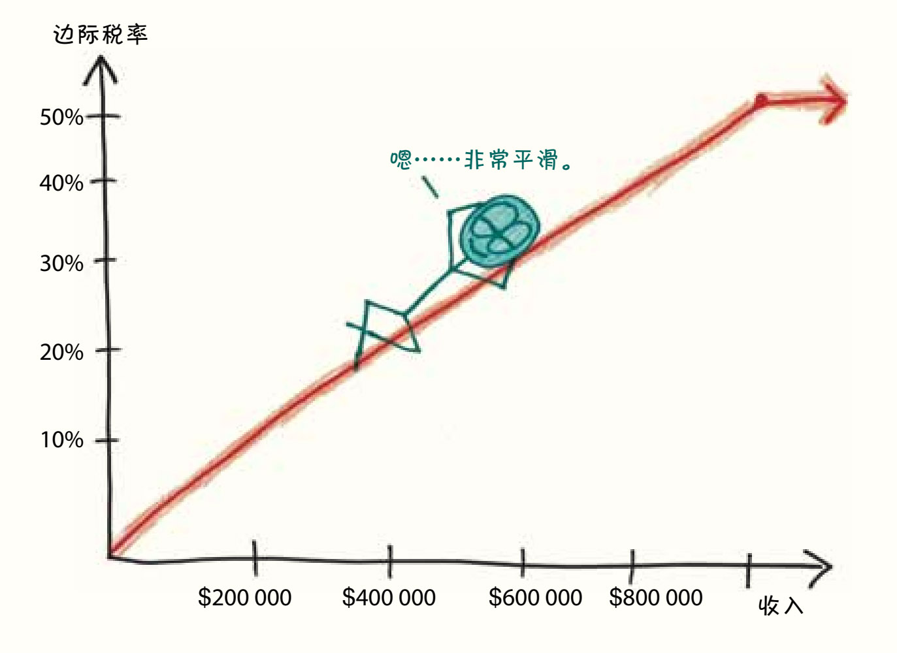
最后这张图体现的就是极端情况下的税收系统，在这个系统中，每多挣一分钱，你缴税的税率都比之前要高一些。没有所谓的“税收等级”，每一份微小收入都有其独特的税率。当处处都是变化时，在某种自相矛盾的意义上，处处都不是变化。
在这样的体系下，缴纳税款和收入的关系曲线将会是这样的：
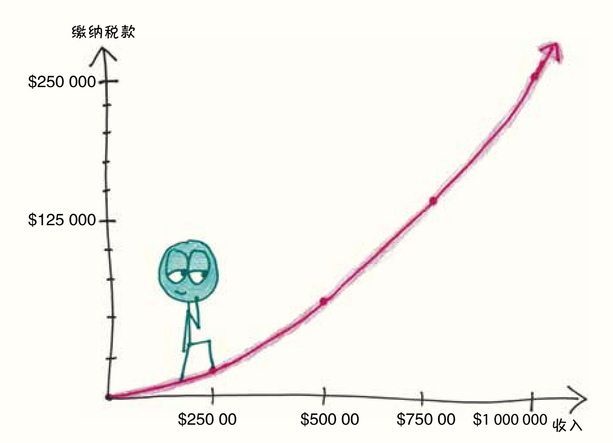
图中曲线的坡度始终在不停地增大，没有不可微点。它就像一辆德国汽车在高速公路上加速一样平稳。
纵观美国历史，你会看到类似的加速增长情况。在20世纪上半叶，税收从“违宪的提案”发展到“试探性试验”，再到“战时特殊支援方式”，最后成了“政府主要资金来源”。1939年，第二次世界大战开始时，只有不到400万美国人缴纳所得税。到1945年，这一数字已超过4 000万。政府的税收收入也经历了类似的增长过程，从战争开始时的22亿美元增长到战争结束时的251亿美元，直到如今，各个州政府和联邦政府的税收每年高达4万亿美元——几乎占美国经济的四分之一。
1942年，随着所得税的飙升，政府委托华特·迪士尼制作了一部短片来激励美国人缴税。财政部部长要求迪士尼公司为其量身打造一位新面孔的动画主角，但迪士尼公司坚持使用当时公司里最大牌的明星。因此，超过6 000万的美国人在电影荧幕上看到了来自迪士尼明星唐老鸭的爱国情怀和纳税热情。（“兄弟们，努力纳税，打倒轴心国！”）8
这部卡通片奏效了，两年后，最高边际税率达到了历史新高——94%，在其他国家甚至被推得更高。20世纪60年代，英国对高收入者征收的边际税率高达96%，《收税员》（Taxman）是披头士乐队最杰出的专辑《左轮手枪》（Revolver）9的开头曲目，他们用尖刻的歌词讽刺了这一现象：
告诉你吧，（你挣的钱）一分给你，十九分给我10
猜猜关于高边际税率最荒唐的故事来自哪里？瑞典。这是由儿童读物作家阿斯特丽德·林德格伦（Astrid Lindgren）讲述的故事。1976年，林德格伦在晚间小报《快报》上发表了一篇讽刺自己经历的文章。11故事讲的是一个叫庞培里波萨的女人，住在一个叫莫尼斯马尼亚的地方。在这片土地上，很多人对为福利国家提供资金的“压迫性税收”抱怨连连，但庞培里波萨却不在此列——尽管这里的边际税率高达83%，她还是为自己能留下17%而“充满喜悦”，她“在人生的道路上无忧无虑地走着”。
庞培里波萨（作家林德格伦的化身）的工作是写儿童读物。在政府看来，这让她成了一个“小企业主”，她需要承担“社会雇主费用”。然而，庞培里波萨一直没明白其中的含义，直到一位朋友指出：
“你知道你今年的边际税率是102%吗？”
“瞎说什么呢，”对数学不是特别熟悉的庞培里波萨说，“这个比例根本就不存在呀。”
荒唐的事情就发生在这里。庞培里波萨每赚1元，就欠政府1.02元。这就像我们之前说的“税收等级提升”的噩梦一样：收入在增加，财富却在减少。庞培里波萨的财富面临的不是让她能悬崖勒马的断崖式下跌，而是连续的、不断加速的下滑。她卖的书越多，她就会变得越穷。
“那些可怜的孩子，他们坐在世界的每一个角落里……今年他们对阅读的渴望也会为我增加一些收入吧？”就在她最没有防备的时候，大额税单无情地将她击垮。
在她最初挣的15万元中，她可以给自己留下4.2万元。但随着她挣得越来越多，最后留给自己的只有心碎。增加的收入不但不会增加她的存款，甚至还会带走她早年的一些存款。每增加10万元的税前收入，她的财富就会减少2000元。
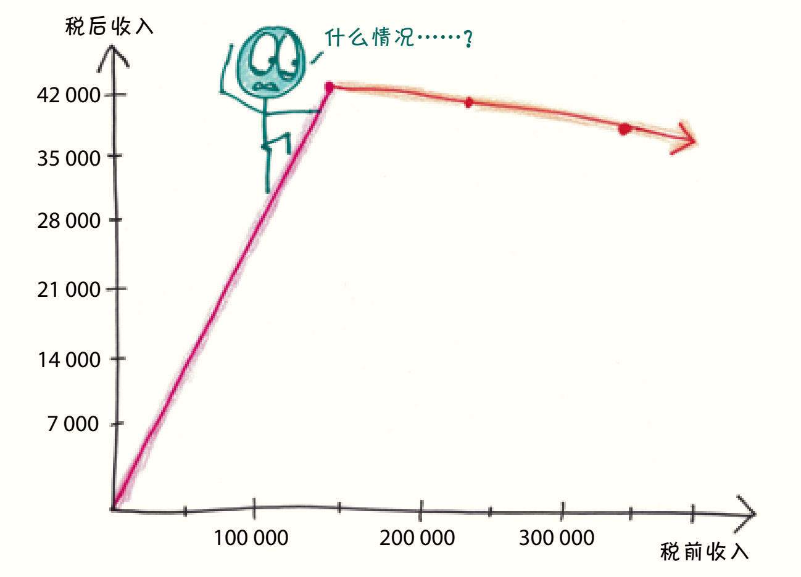
庞培里波萨算了算，最坏的情况下，假如她赚了200万元，她就会只剩下少得可怜的5 000元。简直让人难以置信。
她自言自语道：“这个老女人……这里有个小数点，你肯定算错了，至少还会给你留下5万的。”于是，她重新算了一次，但结果一点儿也没有改变……她现在明白了，写书大概是一件肮脏和可耻的事吧，否则为什么会受到如此严厉的惩罚呢？
在故事的结尾，庞培里波萨的收入全部被税收侵蚀，被国家用于社会福利上。故事的最后一句是：“她再也再也没有写过任何书了。”
故事中的数字直接来自林德格伦的生活，相较之下，瑞典如今仅为67%的最高税率就显得合理多了。
《莫尼斯马尼亚的庞培里波萨》在瑞典引起了轩然大波，引发了一场激烈的辩论，导致了社会民主党在40年来首次在选举中落败。12而长期支持社会民主党的林德格伦还是把自己的不满放到了一边，继续投票支持该党。
回到美国，尽管围绕个人所得税的争论已经有一个世纪的历史，但仍一如既往地激烈。
我的学生们关于税收的作业几乎囊括了这场争论的方方面面。一些学生以再分配的名义上调税率，或者以促进经济增长的名义下调税率。一位聪明的“暴君”学生设计了一个累退体系，即更高的收入水平面临更低的边际税率。13他认为我们需要“激励”穷人来赚钱。也许他是真心这么认为的，也许他是在讽刺共和党的政治，或者也许他只是想标新立异（他最后得了A的成绩）。一些学生认同激进的罗宾汉经济正义体系，并选择了接近100%的最高税率。甚至有人选择了高于100%的税率，希望把庞培里波萨的命运强加给超级富豪。还有一些学生完全跳出所得税框架，构想了一个全新的制度。
简而言之，我看到的是无处不在的创新和毫不存在的共识。我想这就是人们所谓的“美国”吧。